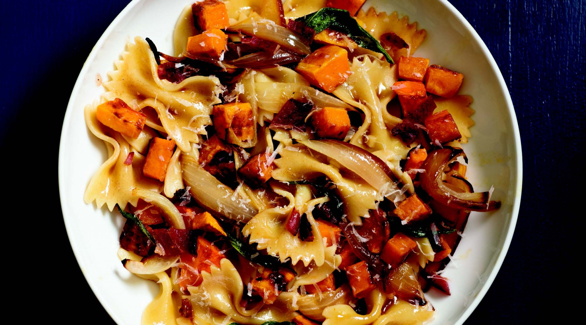

Yields
Serves 4, with leftovers
Time
35 minutes cooking
The browned butter and roasted vegetables make this special, but roasting everything in the oven at once makes it easy to prepare.
Ingredients
1 small butternut squash, (1 to 1 1/2 pounds) seeded, peeled, and cut into 1-inch cubes
1 medium onion, cut into 1/2-inch wedges
1 1/2 tablespoons olive oil
1/2 teaspoon kosher salt, plus more for the pasta water
4 ounces sliced bacon
1 pound store-bought bowtie pasta or 1 1/4 pounds homemade
4 tablespoons (1/2 stick) unsalted butter, cut into chunks
10 fresh sage leaves
1/2 cup finely grated Parmesan cheese
Freshly ground pepper
Directions
-
Preheat the oven to 425°F. In a large bowl, toss the squash and onion with the olive oil and salt. Spread on a parchment-lined baking sheet and roast in the upper half of the oven until the squash is tender and the onions are golden, 30 to 35 minutes.
-
Meanwhile, lay the bacon on another baking sheet. Bake until crispy, about 18 minutes. Transfer to a paper-towel-lined plate.
-
While the bacon and vegetables cook, bring a large pot of salted water to a boil and cook the pasta until tender, 7 to 10 minutes for dried, or 2 minutes for fresh. Reserve 1 cup of the pasta water, drain and rinse the pasta, and transfer it to a large serving bowl.
-
Melt the butter in a small saucepan over medium heat. Stir constantly, keeping a close eye on the color of the butter. When the foam subsides and the butter turns slightly brown, add the sage leaves. Remove from heat and as soon as the sage leaves start to curl, transfer them to the plate with the bacon.
-
Add the squash and onions to the pasta, then pour the butter over the bowl, tossing to coat the pasta and vegetables. Crumble the bacon over the pasta and top with the crispy sage leaves and the cheese. Pour enough pasta water over the cheese to create a light sauce. Finish with a bit more salt and lots of freshly ground pepper.